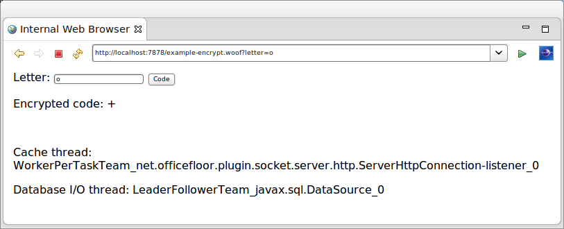

This tutorial demonstrates the ability to assign a thread pool to execute specific methods (i.e. Thread Injection). See Inversion of Coupling Control for more details.
The example used for this tutorial is a simple encryption. A database table stores the mapping of a letter to an alternate letter. The encryption occurs by using the database to map the clear text letter to the encrypted letter.
To demonstrate Thread Injection, once the letter encryption is looked up in the database it is cached to provide quicker subsequent look ups for that letter. As the database operation is blocking, it is executed by a separate thread pool to avoid the socket threads from blocking. The cached letters are serviced only by the socket threads to reduce thread overheads (as no blocking looking up in memory). This demonstrates Thread Injection's ability to tune execution of various aspects of the application to specific thread pools.
The example's web page is as follows and has been kept simple to focus on thread injection.
The example displays the names of two threads to show the different thread pools servicing the request.
The Thread Injection configuration is contained in the application.teams file at the root of the class path. For the example application it is as follows.
Note that OfficeFloor refers to a thread pool as a Team. The naming comes from OfficeFloor basing it's modeling on a business.
<teams> <team source="net.officefloor.frame.impl.spi.team.ExecutorCachedTeamSource" type="javax.sql.DataSource" /> </teams>
The team is a TeamSource implementation that provides a thread pool via Java's concurrent Executor.
OfficeFloor uses the method's dependencies to determine the type of functionality being undertaken by the method. The method's dependencies give an indicator of what the method is likely to be doing. In this case if the method requires a Connection it is very likely that it will be doing blocking database I/O calls. This means of classifying methods allows OfficeFloor to auto-magically use the appropriate thread pool to execute the method. It is what OfficeFloor considers Thread Injection.
All other methods are executed by the default Team. Running stand-alone this would be the socket listener thread.
Note: the default Team actually re-uses the invoking thread of the previous method. This reduces thread context switching and improves performance. For a full explanation of Thread Injection please read the paper on OfficeFloor.
Adding thread pools is optional and therefore the inclusion of the application.teams file is optional. It is anticipated that threading will be configured closely to the dependencies available within an environment. The file however is supported for extending WoOF web applications by customising the thread pools.
The following is the content of the template.
<html>
<body>
<form action="#{encrypt}">
Letter: <input name="letter" value="${letter}" type="text" />
<input type="submit" value="Code" />
</form>
<p>Encrypted code: ${code}</p>
<br />
<!-- {ThreadNames} -->
<p>Cache thread: ${cacheThreadName}</p>
<p>Database I/O thread: ${databaseThreadName}</p>
</body>
</html>
The following provides the values for the ${property} entries from the template logic.
@HttpSessionStateful // caches this object in session
public class Template implements Serializable {
// Session cache
private Map<Character, LetterEncryption> cache = new HashMap<Character, LetterEncryption>();
// Template properties
private LetterEncryption displayCode;
private String cacheThreadName;
private String databaseThreadName;
public String getCacheThreadName() {
return this.cacheThreadName;
}
public String getDatabaseThreadName() {
return this.databaseThreadName;
}
// Template sections
public LetterEncryption getTemplate() {
return (this.displayCode == null ? new LetterEncryption(' ', ' ') : this.displayCode);
}
public Template getThreadNames() {
return this;
}
Along with providing the values the class is also annotated so that it is stored within the HTTP session. This allows the cache field to act as a cache across requests. See the other tutorials for further details.
The example application first tries the cache for the encrypted code.
@FlowInterface
public static interface PageFlows {
void retrieveFromDatabase(char letter);
}
@Next("setDisplayCode")
public LetterEncryption encrypt(EncryptLetter request, PageFlows flows) {
// Specify thread name (clearing database thread)
this.cacheThreadName = Thread.currentThread().getName();
this.databaseThreadName = "[cached]";
// Obtain from cache
char letter = request.getLetter();
LetterEncryption code = this.cache.get(Character.valueOf(letter));
if (code != null) {
return code;
}
// Not in cache so retrieve from database
flows.retrieveFromDatabase(letter);
return null; // for compiler
}
public void setDisplayCode(@Parameter LetterEncryption encryption) {
this.displayCode = encryption;
}
Should the encrypted code be found in the cache it is passed as a parameter to the setter method. The setter method keeps reference to the encrypted code for rendering the web page response. See the other tutorials for explanation of this WoOF functionality.
On not finding the encrypted code in the cache the above method triggers for it to be retrieved from the database. The following method retrieves the encrypted code from the database. The returned encrypted code is passed to the setter method for rendering to the web page.
@Next("setDisplayCode")
public LetterEncryption retrieveFromDatabase(@Parameter char letter, Connection connection) throws SQLException {
// Specify thread name
this.databaseThreadName = Thread.currentThread().getName();
// Retrieve from database and cache
PreparedStatement statement = connection.prepareStatement("SELECT CODE FROM LETTER_CODE WHERE LETTER = ?");
statement.setString(1, String.valueOf(letter));
ResultSet resultSet = statement.executeQuery();
resultSet.next();
String code = resultSet.getString("CODE");
LetterEncryption letterCode = new LetterEncryption(letter, code.charAt(0));
// Cache
this.cache.put(Character.valueOf(letter), letterCode);
return letterCode;
}
As the method has a Connection dependency (which is dependent on the DataSource dependency) it is executed by the configured team. This is reflected by the web page response showing different threads executing the cache and database methods.
Though this is a simple example it does highlight that under heavy load that cached letter encryptions can still be serviced even if all database (team) threads are blocked waiting on the database.
The following unit test makes requests to encrypt a letter.
@RegisterExtension
public final MockWoofServerExtension server = new MockWoofServerExtension();
@Test
public void retrieveEncryptions() throws Exception {
// Retrieving from database (will have value cached)
MockHttpResponse response = this.server
.sendFollowRedirect(MockHttpServer.mockRequest("/example+encrypt?letter=A").method(HttpMethod.POST));
assertEquals(200, response.getStatus().getStatusCode(), "Should be successful after POST/GET pattern");
assertFalse(response.getEntity(null).contains("[cached]"), "Ensure not cached (obtain from database)");
// Looking up within cache (referencing session in cookies)
response = this.server.sendFollowRedirect(
MockHttpServer.mockRequest("/example+encrypt?letter=A").method(HttpMethod.POST).cookies(response));
assertEquals(200, response.getStatus().getStatusCode(), "Should be successful after POST/GET pattern");
assertTrue(response.getEntity(null).contains("[cached]"), "Ensure cached");
}
JUnit 4 example:
@Rule
public final MockWoofServerRule server = new MockWoofServerRule(this);
@Test
public void retrieveEncryptions() throws Exception {
// Retrieving from database (will have value cached)
MockHttpResponse response = this.server
.sendFollowRedirect(MockHttpServer.mockRequest("/example+encrypt?letter=A").method(HttpMethod.POST));
assertEquals("Should be successful after POST/GET pattern", 200, response.getStatus().getStatusCode());
assertFalse("Ensure not cached (obtain from database)", response.getEntity(null).contains("[cached]"));
// Looking up within cache (referencing session in cookies)
response = this.server.sendFollowRedirect(
MockHttpServer.mockRequest("/example+encrypt?letter=A").method(HttpMethod.POST).cookies(response));
assertEquals("Should be successful after POST/GET pattern", 200, response.getStatus().getStatusCode());
assertTrue("Ensure cached", response.getEntity(null).contains("[cached]"));
}
As the same letter is requested, the
The next tutorial covers testing a WoOF web application.